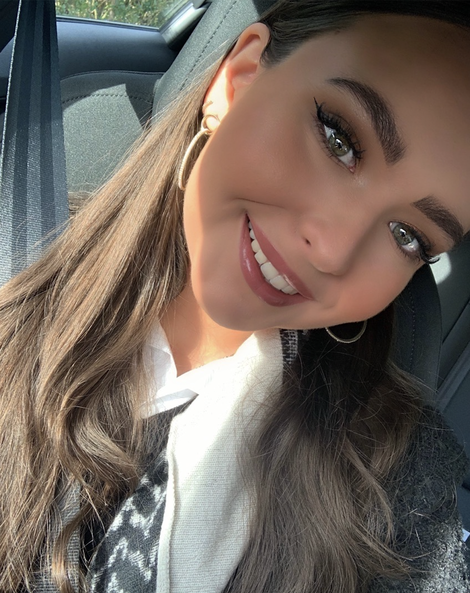
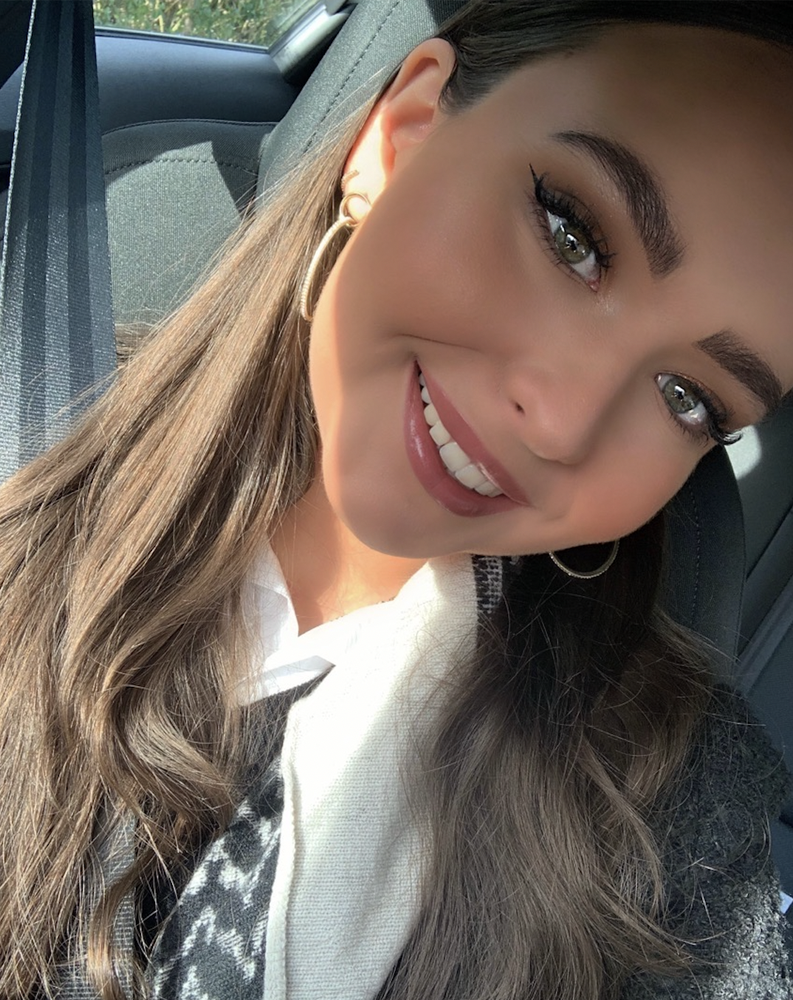

Hvem er jeg?
Hvordan er jeg som studerende?
Som studerende vil jeg beskrive mig selv som pligtopfyldende, selvstændig, kreativ og ordentlig. Jeg kan godt lide at det jeg aflevere er ordenligt, og at jeg ikke sidder med det hele i sidste sekund. Jeg er meget struktureret og planlægger derfor næsten alt. Jeg kan godt lide at arbejde alene med projekter, fordi jeg ikke har noget imod at bruge mange timer på det og sætter gerne også weekender af til skolearbejde. Jeg valgte at søge ind på MMD på KEA sommeren 2021, fordi jeg altid har vidst at jeg skulle lave noget der var kreativt og digitalt. Jeg elsker at tegne grafisk, nørde med programmer og udstyr. Jeg tænkte derfor, at dette ville vare det rette sted for mig og indtil videre synes jeg at jeg har ramt helt rigtigt.
Hvordan er jeg som Privat person?
Jeg hedder Sascha Haarup Løschenkohl, jeg er 21 år gammel og bor i Søborg lidt udenfor København. I min hverdag bruger jeg meget af tid på at være sammen med min kæreste, familie og veninder. Derudover elsker jeg at rejse, og opleve lande og kulturer, med mennesker jeg holder af. Jeg har været i 30 lande. Jeg elsker at lærer nye ting, så som nye tegne eller video-redigerings programmer. Da jeg elsker at tegne grafisk og nørde med alt på computer og iPad. Udover den store interesse, jeg har for alt der er digitalt, så elsker jeg skønhedsbranchen og alt der har noget med beauty verdenen at gøre. Det kan være alt fra negle, makeup til skønhedsbehandlinger.
 
